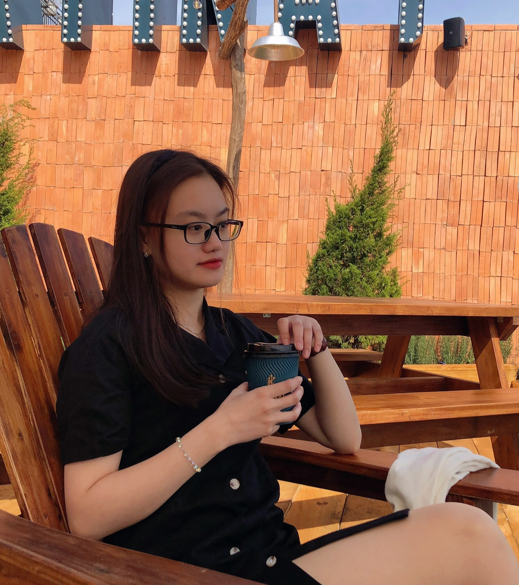

Happy Women's Day üåπ.......................................................................From CyberSoft !..........................................
2023
Hoàng Yến
L O V E
❤
Y O U

Click me now !